TRAVEL BOOK
徳島旅行
2026.10.09 — 10.10
ABOUT THIS TRIP
旅行の目的
CONCEPT
休日に朝7時までMMOをプレイする人間たちは、一般的には出不精と呼んで差し支えない。そんな引きこもりたちではあるが、やっぱり、旅行はできる時にしておいた方がいいに違いない!
3人の中で最も遠く、最も出不精であるオビくんの地元、徳島に、我々一行は集うのであった...。
MESSAGE
なんか、遠さも相まって、なかなか集まれない感じだと思うので、ぜひ仲良く楽しくやりましょう。
MEMBERS
メンバー紹介
たいよう / Tai Solis
DQXでチーム「ミルククレープ」のリーダーを1年弱していた。
はじかんを殺して、笑顔になったことがある。
オビ / Obi Tayan
これまで2名の"A"と関係を持ったり持たなかったりした。
今回の旅行においてドライバーをしてくれる予定である。
ヤクシダ / Sida Yqki
いぶとはじかんと闘った結果、ミルククレープからは消えたのだが、結果的にぷかぷかクラゲに流れ着いたので、トータルで見るとプラスになっているかもしれない。
STAY
宿の紹介
OUR HOUSE
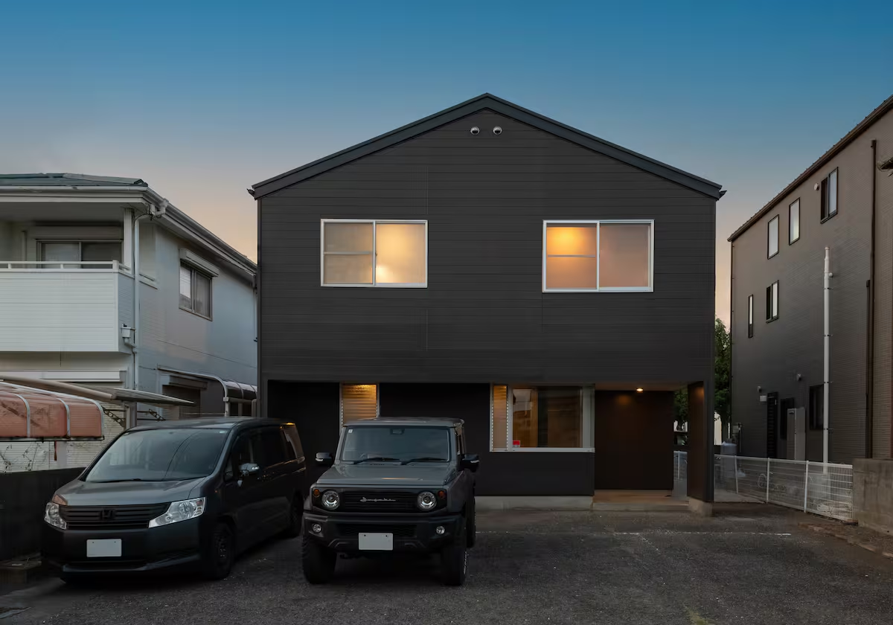
Airbnbで情報をチェック
住所: 772-0012 徳島県鳴門市 撫養町 小桑島 西浜27
家主の連絡先: 中野さん 090-1001-7433
チェックイン/アウト: 16:00 / 10:00
VEHICLE
車の情報
OBI'S CAR
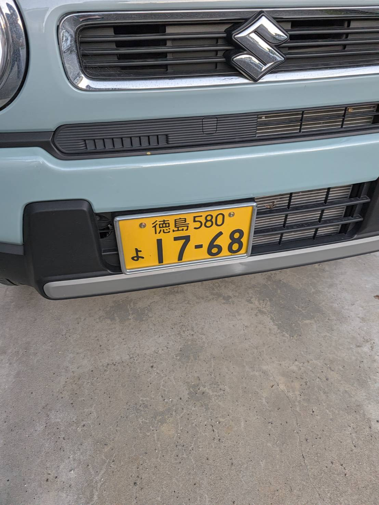
オビくんの車を今回は利用させてもらう。一応、自分たちも免許があるから、一日保険に加入して運転を代われる態勢を作っておこう。車種： SUZUKI ハスラー
ナンバー： 徳島580 よ 17-68
FLIGHT TICKETS
飛行機のチケット
OUTBOUND
JAL JL455 ボーイング737
座席: 19J, 20J
10:25 羽田空港ターミナル1 出発
11:45 徳島阿波踊り空港 到着
RETURN
JAL JL464 ボーイング737
座席: 54A, 54B
20:40 徳島阿波踊り空港 出発
21:55 羽田空港ターミナル1 到着
PAYMENT
割り勘 / Walica
広告
ADVERTISEMENT
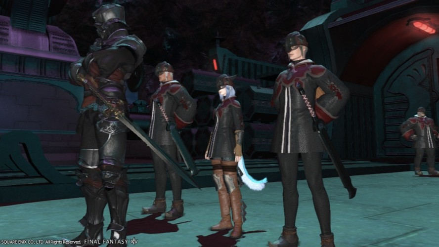
我が偉大なるガレマール帝国の版図拡大のため、己の力を捧げる忠義の士を募集する。
募集職種
• 魔導アーマーパイロット• 機工兵 / 技術兵
• 魔導技術研究員
魔力を持たないもの、帝国籍を持たないものも問題ない。皇帝陛下及びガレマール帝国への絶対的な忠誠を誓えるものは、必ず結果を出して幹部候補となることができる。
"For Glory, Garlemald"
(ガレマール帝国に栄光あれ)
貴公の応募を待っている。
DAY1 概要
DAY1 SUMMARY
ざっくりタイムテーブル
10:25 羽田発11:45 徳島着
12:30 鳴門でお昼ごはんを食べる
14:00 うずしお汽船に乗る
14:30 相が浜をぶらぶらする
16:00 スパ銭でしっぽりする
17:30 マルナカでお買い物
18:00 宿にチェックイン
19:00 夜ごはんを食べる
21:00 寝るまでまったりする。
DAY 1 / LUNCH
お昼ご飯 @魚大将
魚大将
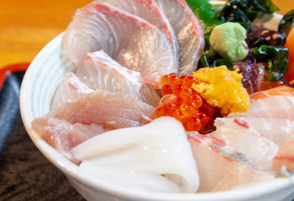
魚大将 webページ
鳴門駅からほど近いところにある、海鮮およびお寿司がメインとなるレストラン。
徳島の海から獲れる豊富な鮮魚を使った海鮮料理がお手頃な価格で楽しむことができる。
ただし、オビくんは楽しめない。オビくんはおそらく唐揚げ定食を食べるであろう。
なお、読み方が「さかなたいしょう」らしい。絶対「うおだいしょう」なのに。
DAY1 / うずしお汽船
Day1 うずしお汽船
うずしお汽船
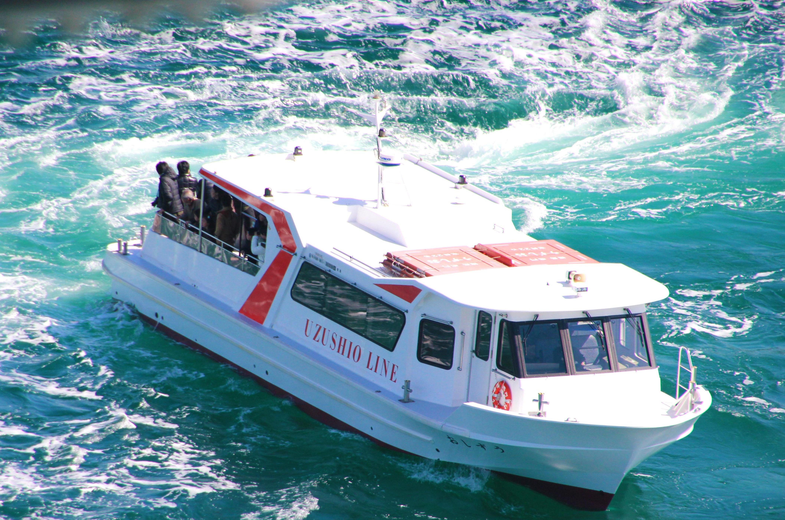
うずしお汽船 webページ
船に乗って間近でうずしおを見ることができる。
チケット代は2000円。乗船時間は約20分程度。予約は無し、基本的には乗れるらしい。
毎日運航する時刻が微妙に違うので、2~3日前にまたサイトをチェックしたほうがいい。あと天気もチェックしておきたい。
DAY1 / 相が浜
Day1 相が浜
相が浜
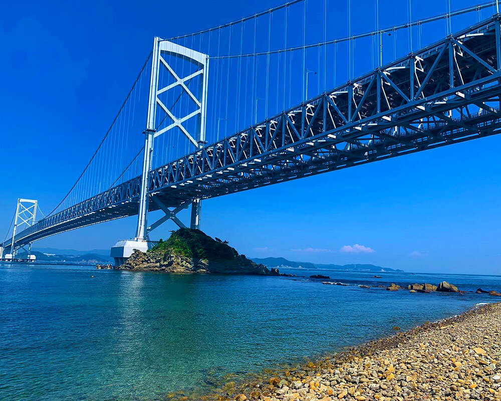
うずしお汽船乗り場から徒歩で行ける浜辺。残念ながら泳げない。
鳴門海峡大橋を一望できるいい景色がある。
キャッチボールなどをしてオビくんがケガをする可能性があるので、注意したい。
あと、天気が悪いと全然写真が映えなさそうなので、それも注意したい。
DAY1 / 温泉
鳴門天然温泉 あらたえの湯
鳴門天然温泉 あらたえの湯
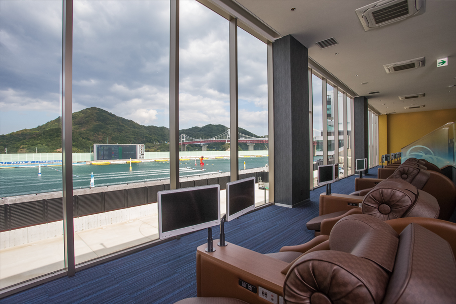
あらたえの湯 webページ
スパ銭なのだが、恐ろしく安い。これが四国か。
競艇を見ながらまったりできるという、ふざけたコンセプトである。
普通に来たら絶対に1Fの定食屋さんでご飯を食べてしまうであろうが、今回はスルーする。
広告
ADVERTISEMENT
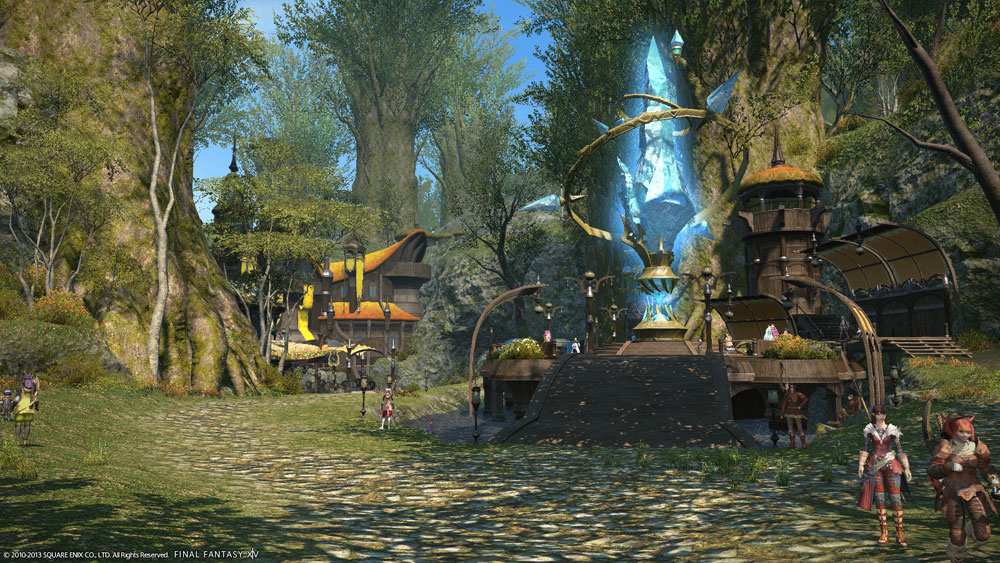
森と水車のハーモニー、精霊が宿る神秘の都グリダニアへようこそ
紅茶川の豊かな水流を利用した数々の水車に代表される、美しい木造建築は自然の地形に溶け込み、一体となって絵画のような景観が広がっています。都会の喧騒を離れ、自然の息吹を感じるぜいたくな時間をグリダニアでお過ごしください。
DAY 1 / DINNER
夜ごはん @ じゅわっち
DINNER
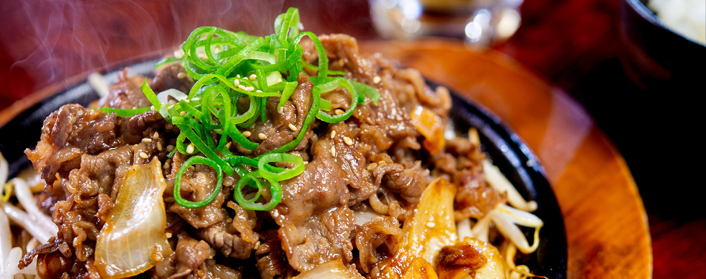
じゅわっち webページ
肉料理が豊富にある居酒屋さん。
徳島県特産の地鶏「阿波尾鶏」や、岩浅牧場から仕入れている牛ももやホルモンが看板メニューである。
串ものに炭火焼に果てはうどんまで、なんでも食べれること間違いなし。
DAY2 概要
Day2 SUMMARY
ざっくりタイムテーブル
朝 宿で朝ごはんを食べる9:45 宿を出発
10:00 よしみがま にて電動ろくろ体験
12:15 お昼ごはんを食べる
13:00 霊山寺 および 大麻比古神社 へ参詣
18:30 夜ご飯を食べる
19:40 空港にて解散。
20:40 離陸。
DAY2 / POTTERY
電動ろくろ体験 @佳実窯
佳実窯（よしみがま）
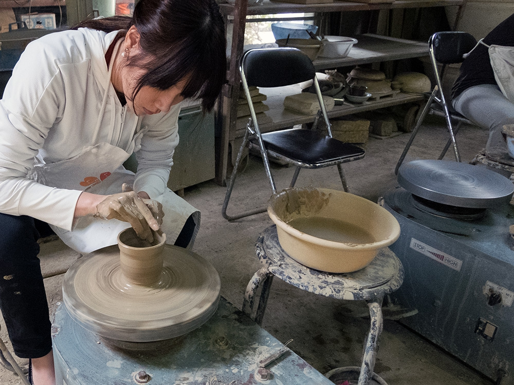
住所: 〒779-0302 徳島県鳴門市大麻町大谷東山谷45
2時間程度の電動ろくろ体験を行う。
2kgの粘土で3個まで作品を焼成してくれる。
徳島には「大谷焼」という伝統工芸があるらしく、ここのマスターはそれを継いでいる人みたい。多分自分らがする体験ではきっと細かいことは考えなくてよいはず。
DAY 2 / LUNCH
お昼ご飯 @ラーメンふじい
徳島ラーメン ふじい
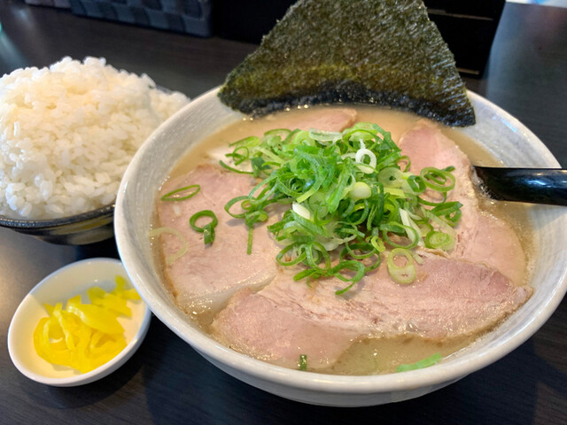
住所: 〒779-0301 徳島県鳴門市大麻町姫田森崎20-5
よしみがまから近くにある徳島ラーメンのお店。
徳島ラーメンは、豚骨ベースに醤油を合わせたスープに、生卵を落としてごはんと食べるのが通例らしい。
今回行くふじいさんは「白系」というくくりで、割とすっきりめ？らしい？
広告
ADVERTISEMENT
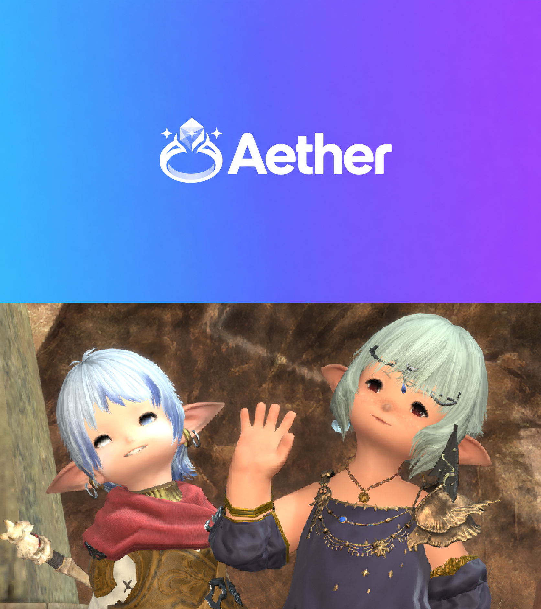
その指輪、いつまで
ミラプリのままなの?
冒険も、エタバンも、まずはマッチから。Aether。
※Aetherは18歳未満の方はご利用いただけません。
19
DAY2 / TEMPLES
Day2 霊山寺 / 大麻比古神社
第一番札所 霊山寺
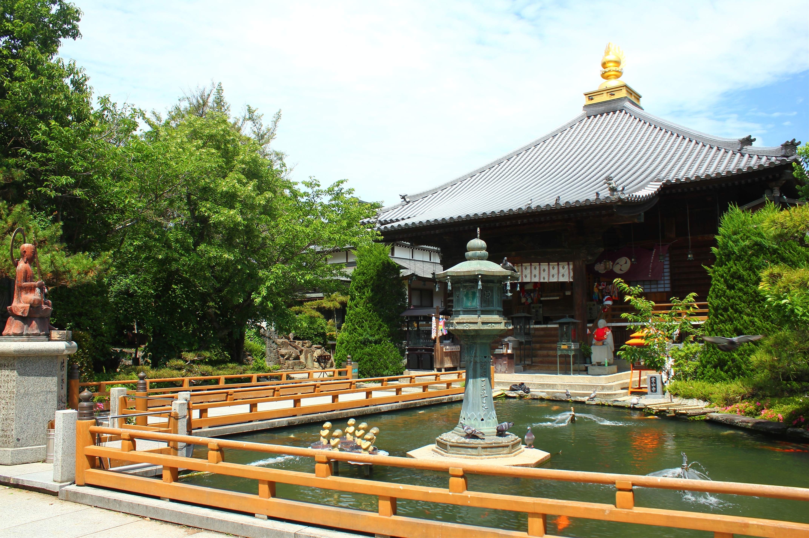
住所: 〒779-0230 徳島県鳴門市大麻町板東塚鼻126
四国八十八か所巡礼霊場の第一番札所として多くのお遍路さんの旅の出発地になっている。
大麻比古神社
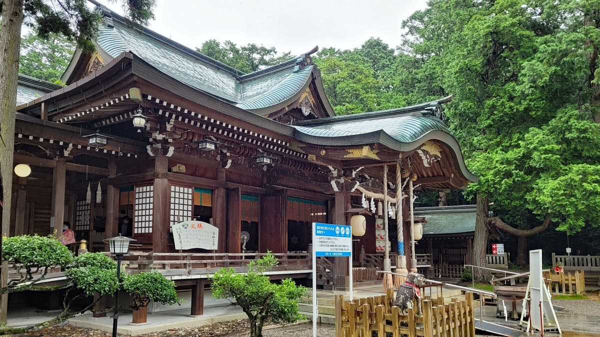
大麻山のふもとに鎮座する阿波国一宮(神社の中で最高位であるということ)で、厄除けや交通安全の神様として地域で古くから信仰されている。
21
DAY 2 / DINNER
夜ごはん
DINNER
徳島最後のごはん。
A1
APPENDIX 01
ルベランギスⅢ 必要DPSと何をすればいいか
ルベランギス3
ルベランギスⅢのHPは113万である。パラの1さみだれは3300、武の1タイガーは2700（どちらも牙神のみとする）、レンはタイガー、さみだれを平均するなら1500くらい。
自分が称号取った時、パラは赤のランダム行動中、1分に11回行動していた。武は10回行動していた、レンは9回(いずれもピオ2維持中だった）。
この人たちはマジで上手かったのだが、しかしこれを単純に足し合わせても、たったの768000である。ダメージがあと40万足りないのである。
この「あと40万」という数字をベースに、各職業、どうやってDPSを伸ばすべきかを考えなくてはならない（死なずに1分10行動ができることはこの記事では前提とします）。
隠者
白中はレボルを投げましょう。レボルを1回投げると、20秒間PTDPSが1.5倍になります。
レボル1回に、およそ26000ダメージの価値があります。
白帯に3回レボルを投げることができれば、貴方はPTに80000ダメ程度の貢献をしたことになります。これはアヌビスライガーよりも大きい数字です。
隠者は黄赤はギミック処理で忙しいので、白で狙うので十分です。
レンジャー
隠者と同じく、レボルの価値がすごく高いです。レボルを10回打てば（打てませんが）、PTDPSが260000上がります。ルベ3は本当にこれが大事。
あと、レンジャーは本体火力がそこそこ高いのですが、それはCT技に依存しています。
レボルの後、色んな技を打ってください。レボル→デュアルブレイカー、ギガシュート。サマソ→ライガーゴッスマ、ケルベロス→フェンリル、降魔紅蓮斬。
レンジャーは継続的に火力を出す職ではなくCT技でバーストをかける職です。ちなみに、アヌビス時はライガー+タイガー1回まで刺せればツメのがDPS高くなりそうです。
パラディン
鉄壁の進軍をリキャ打ちしてください。超さみだれはアヌビス以外使わないでください。
リキャスト120秒、効果時間45秒です。鉄壁中は1Tあたり4800程度になり、1Tあたり1500の伸び、効果時間を考えると鉄壁1回で10500程度の効果があります。
レボルと合わせないと弱いです(効果時間45秒なので合いやすいとは思う)。45秒のうち20秒がレボル来てくれたとすると、鉄壁1回の期待値は17700くらいになります。試合中に5回打って85000くらいの伸び。
武闘家
行雲流水はリキャ打ち。ライガーはアヌビスのみ待ってください。
行雲流水は40秒間、初撃が1999になると考えてくれれば良いです。110秒リキャなうえにレボルとは相性悪いけど、流水中に1回はゴッスマを打てるとして、期待値は8000くらい。試合通して5回打ったら40000くらい。
ライガーはCT55(チャ短引いてるとして)秒なので、適当言ったら8回は打てる。ライガーは素で6000くらい、レボルで10000くらい、レボルアヌビスで20000くらい。
ライガー合わせは諸説あるけど、アヌビスは絶対待った方が良い。レボルだけなら1T分の損失だからどっちでもいい。どっちでもいいから悩んで手が止まらないのが大事。とにかくライガーを8回程度打てるならば、レボルが乗らなくても30000くらい伸びます。
まとめ
こうして各職が頑張ると、無事に40万くらいは稼げます。
各数字を眺めていると、武パラの行動での伸びってそんなに大きくないですよね。やっぱりレボルが強いように見えますか？それは武パラの行動回数が多いからです。
武パラに求められているのは、ギミック処理しながらコンスタントに殴れることです。 バースト火力を伸ばすことではありません。バーストを合わせることではないです。1分で1回行動が少ない人は10分で30000ダメ、レボルやCT技を考慮して50000ダメくらい損してます。
50000ダメ損してる人がバーストで20000くらい稼いでも、まだ余裕でマイナスです。ドラクエのDPS職は世知辛いですね。
レン隠、レボル投げろ。武パラ、手を動かせ。
終わり
A2
APPENDIX 02
執筆中
執筆中
執筆中。